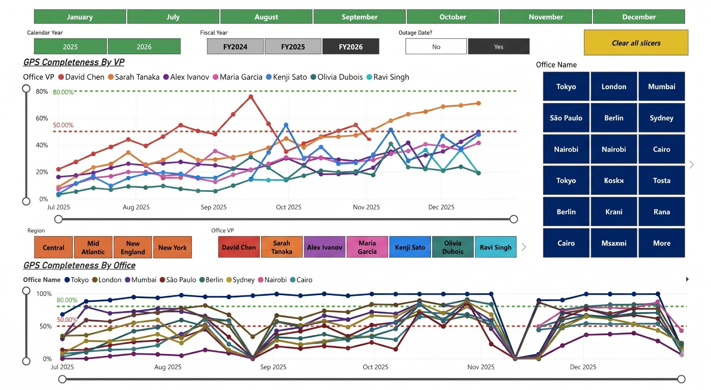
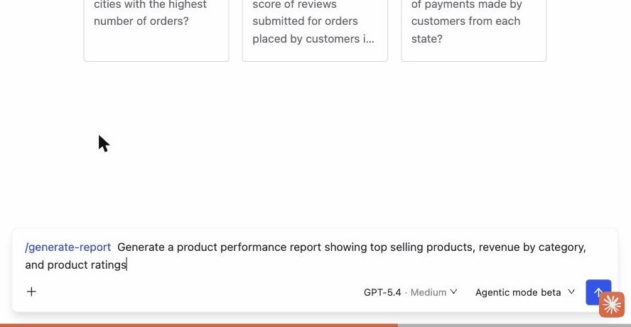
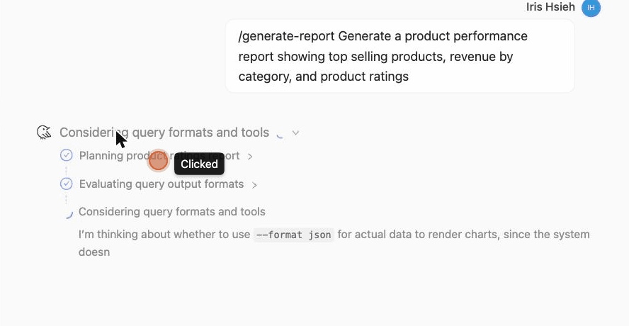
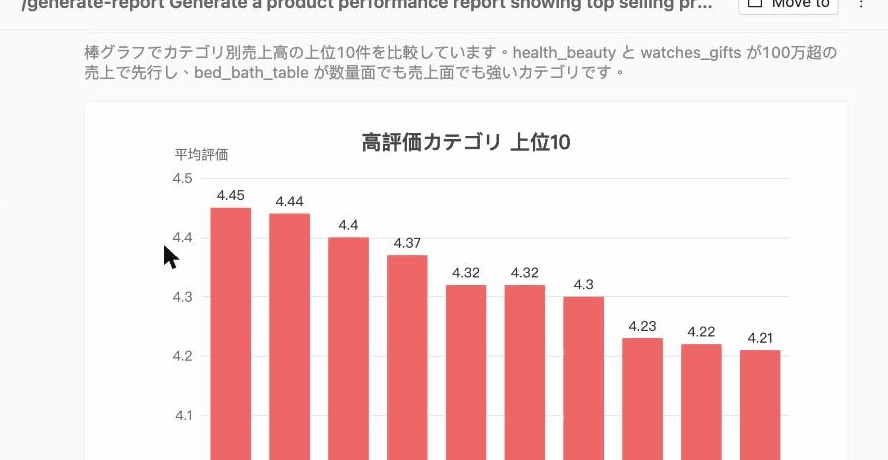

Product | Conversational BI Dashboard
Data Apps is an AI-powered "living dashboard." Instead of writing SQL or dragging widgets by hand, you describe what you need in plain language (for example, "target attainment by VP, filterable by region"), and the AI assembles a connected dashboard of charts, KPIs, filters, and drill-down paths. It turns the old one-question-at-a-time data lookup into a new kind of BI surface you can keep talking to and explore on the fly.
My Role | End-to-End Experience Designer
I led the Canvas experience design for Data Apps from 0 to 1. My main contributions:
Mapping the full user journey: I structured and designed a customer journey map spanning 13 interaction stages, from waking the AI through conversation, generating the canvas, and drilling into charts, to saving, sharing, and managing the finished product.
Designing a dual-control interaction model: I built a control surface that seamlessly combines "AI conversational commands" with "direct click manipulation," letting users keep editing and exploring data on the same canvas in the most intuitive way.
TimeFrame:
Apr–Jun 2026
Data Apps didn't begin as a feature idea. It began in customer feedback. In qualitative interviews, the same picture kept surfacing: every team leaned on a handful of dashboards hand-built by a data analyst, and the moment one needed to change, the whole organization was stuck waiting on one person.

A representative example of one of the customer's own reports: a GPS-completeness dashboard hand-built in Power BI by a data analyst.
Hard to maintain
Every metric tweak, every new month of data, every broken join went back to the analyst who built the file. No one else could safely touch it.
Expensive to build
A single dashboard took days of analyst time: gathering requirements, modeling the data, and wiring up slicers and drill paths by hand.
Frozen once shipped
After launch the report was effectively locked. A new dimension or a different cut meant re-opening the whole build, so most change requests quietly died.
And when another team needed its own view, they couldn't make it themselves. They filed a request, waited in the analyst's queue, and often gave up. That was the opening question behind Data Apps: what if the person who needs the report could simply describe it, and get a real, living dashboard back?
Instead of speccing Data Apps in static mockups and hoping it felt right, I built it to find out. With vibe coding, I turned each idea into a clickable prototype within days, put it in front of real operations users, and let their reactions redraw the flow. What shipped is the version that survived that loop, not the one I sketched first.
The loop was deliberately fast and unprecious. I would vibe-code a version, sit with users while they tried it on their own data, and watch where they hesitated, what they reached for, and what they ignored. Co-creation here was not a workshop, it was shipping a rough build, breaking it on contact with reality, and rebuilding the next morning. Two of those prototyped versions are worth putting side by side, because the distance between them is the whole point.
Two versions, the same dashboard
The job never changed: a team needs a dashboard it can keep using. What changed is how much of the work the person asking has to carry. Across the two versions, the planning moved off the requester and into the system.
Ask one question, get a table
"Generate a chart" to plot it
Pin to dashboard, then repeat
Finally self-serve, but it answered one chart at a time. Rebuilding a full dashboard meant running the whole loop for every tile, and only if you knew each question up front.
Describe the outcome in a line

Agent plans and runs in parallel

A finished report lands

You hand over the goal, not the steps. The agent splits the request into separate aggregations, runs them in parallel, picks a chart per cut, and returns one finished report.
One /generate-report line returned this full GPS-completeness report: each VP's completion trend against target, with office and region slicers.
My first design docked a chat panel to the right of the dashboard, the obvious layout, borrowed from every BI tool with an assistant bolted on. It was wrong: a side panel fights the canvas for width, and it severs the conversation from the artifact it produced. So I moved the conversation into the thread that already holds its history, and let control split two ways inside it, because conversation is great for intent, and terrible for precision.
Conversation for intent
The chat input drives the entire canvas. Describe a dashboard and it's generated; say "show only July through December" and every chart re-syncs; say "expand Cathy Spinney" and the view drills in. Anything faster to say than to find in a menu lives here.
Direct manipulation for precision
But pixel-level and per-chart work belongs to the hands, not the sentence. A pick mode cursor lets you click any card, KPI, or the filter bar to scope the next prompt to that one block. A pencil opens an inline style panel whose controls are specific to that chart type: corner radius for bars, curve type for lines, donut hole for pies, so a control you can't use is never shown. Cards drag to reorder, with a 5px threshold so a button click never starts a drag by accident.
Pick mode (↖) scopes a prompt to one block · the pencil opens chart-type-specific controls
The brief said "dashboard," singular: one big board you generate and own. Watching users, the concept felt too heavy. They didn't want a monolith; they wanted pieces they could lift, reuse, and share, a chart here, a KPI there, a report for one meeting. So I reframed the output: a Data App isn't one dashboard but many independent artifacts that happen to share a canvas.
Treating each artifact as a first-class object changed what the system had to track. A chart is no longer trapped in the board that produced it: it has its own identity, its own owner, and its own place in a folder. That is what makes "Start in new thread" or "Copy to another folder" mean something, and it is why sharing had to answer a sharper question. Not "who can see this board?" but "what can you do with an artifact you didn't build?"
Owner versus shared
Every canvas built in Agent mode is auto-added to its folder's Data apps list. What you can do to a row depends on whether you built it. Owners get the full menu. For a data app merely shared into your folder, Edit is intentionally hidden: you can't open someone else's source thread, so the menu offers Start in new thread, Copy, and a Delete that only removes it from your own folder.
Looking back, Data Apps wasn't really designed in mockups. It was discovered by building, tested against real users, and decided in a handful of small bets: where the conversation should live, and how big a single unit of output should be. The interesting work was never drawing charts; it was choosing, over and over, the version that left the person using it with an obvious next move.